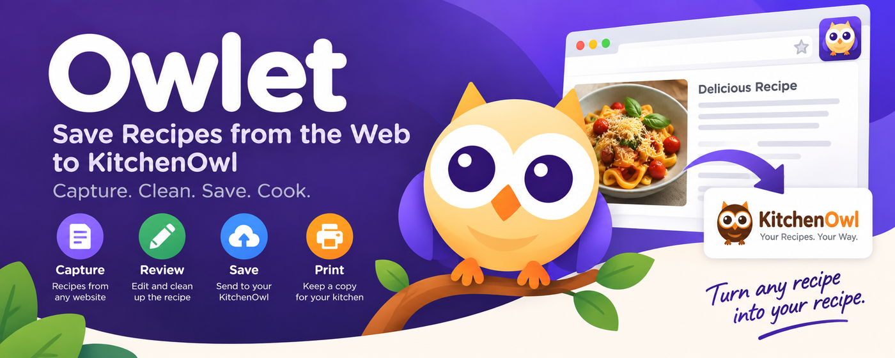
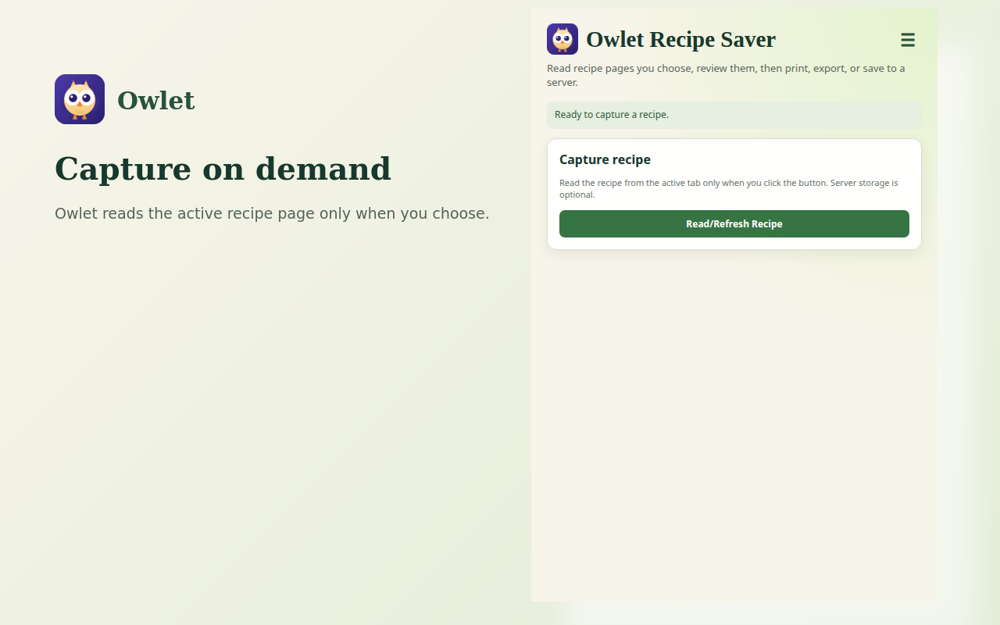
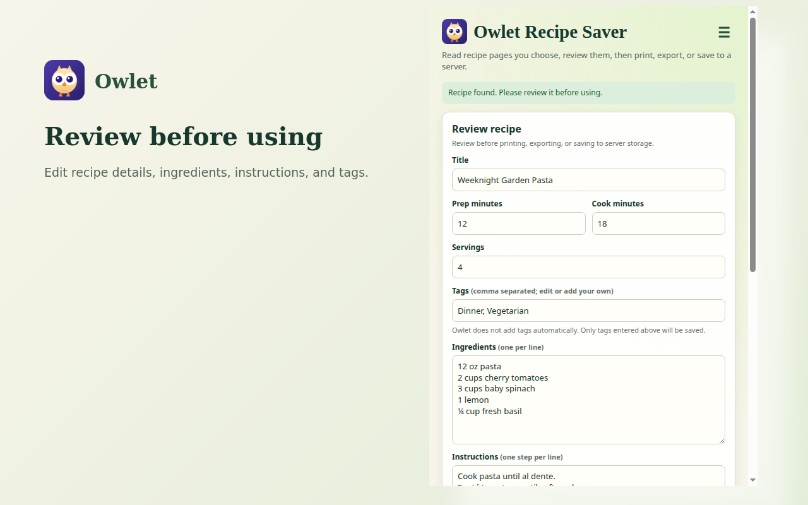
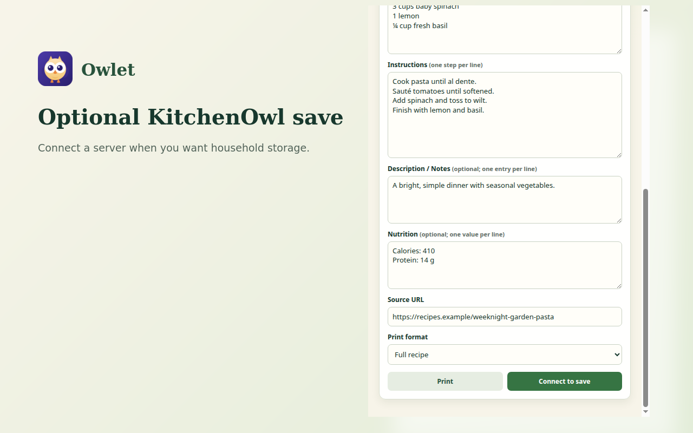
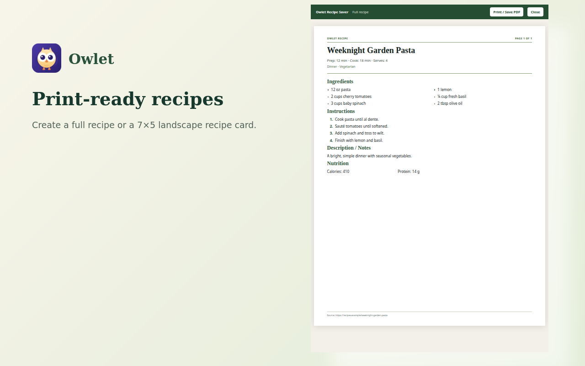
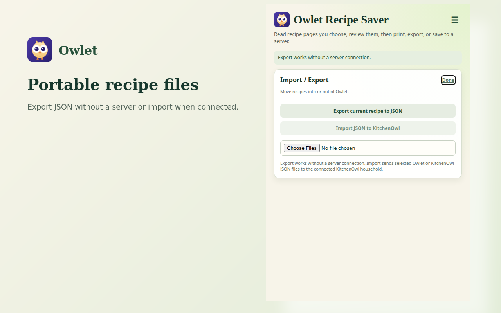

↳
Capture on demand
Read structured recipe information from the page you choose with an explicit user action.
Capture a recipe from the webpage you choose, review and edit it, then print, export, or save it to KitchenOwl.
No Owlet account. No advertising. No tracking. KitchenOwl storage is optional.

Owlet reads only when you tell it to, then puts the recipe back in your hands.
Read structured recipe information from the page you choose with an explicit user action.
Clean up ingredients, instructions, servings, tags, notes, and other recipe details before saving.
Create clean recipe printouts or export recipes locally without connecting to a server.
Connect to a hosted or self-hosted KitchenOwl server only when you choose to save.
Open a recipe webpage and click Owlet from your browser toolbar.
Click Read/Refresh Recipe. Owlet extracts the recipe and gives you an editable review.
Print it, export it, or save it to your selected KitchenOwl server.





Owlet is designed as one cross-browser project, with browser-specific packaging where required.
Owlet gives you a simple way to capture, clean up, print, export, and store the recipes you choose.